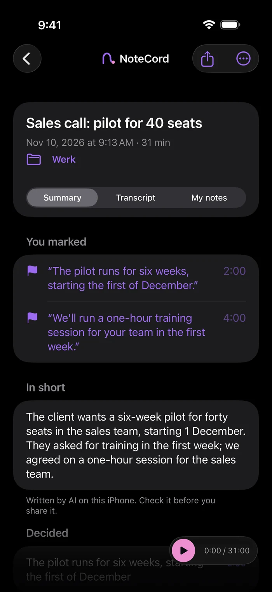

An Otter alternative without an account.
Yes. NoteCord is an Otter alternative that keeps recordings on your iPhone. It records and transcribes conversations on the device itself. Summaries with action points also run on the device and require Apple Intelligence.
Join the waitlist
The short answer
NoteCord is an iPhone and iPad app that records, transcribes and summarizes conversations on the device itself. Summaries with action points require Apple Intelligence. You do not need an account. NoteCord never sends your recordings to us. They only reach someone else if you share them. There is no NoteCord server.
How Otter works
Otter requires an account. Otter stores and processes recordings with cloud providers, including Amazon Web Services, in the United States. Its privacy policy says it trains its own AI technology on de-identified audio recordings.
How NoteCord is different
NoteCord records and transcribes on your device, with no account needed. Its App Store privacy label is “Data Not Collected”. Recording continues with the screen locked and is visible in Dynamic Island and on the Lock Screen. Search through all your conversations and keep them in folders per project or client. On iPad, tap your handwriting to hear what was said at that moment.
When Otter is the better choice
Otter is the better choice if you want an app that joins Zoom, Google Meet and Microsoft Teams calls, works in a browser and on a computer, or offers shared team workspaces. NoteCord does not offer these features. It records with the iPhone or iPad microphone.
What goes into backups
NoteCord audio is excluded from every backup. Text goes into your iPhone’s regular iCloud backup only if that backup is turned on. That text is stored in your own iCloud.
Questions people ask
- Does NoteCord need an account?
- No. You can use NoteCord without an account.
- Does NoteCord send my recordings to a server?
- NoteCord never sends your recordings to us. They only reach someone else if you share them. There is no NoteCord server.
- Does Otter train its AI on recordings?
- Otter’s privacy policy says it trains its own AI technology on de-identified audio recordings.
- Can NoteCord join my Zoom calls?
- No. NoteCord records with the iPhone or iPad microphone.
- Does my audio go into an iCloud backup?
- No. NoteCord audio is excluded from every backup. Text goes into your iPhone’s regular iCloud backup only if that backup is turned on, in your own iCloud.